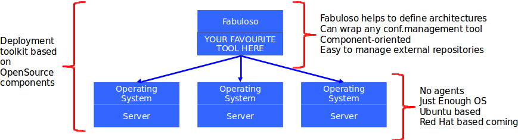

FABuloso is a python tool to easily organize and deploy an OpenStack architecture using Fabric. FABuloso manages configuration with components within catalogs (take a look at the overview for more info about the different parts of FABuloso).
We know there are really cool tools out there, but we think we have to focus on doing things simpler and easier. That’s because we started developing FABuloso to deploy OpenStack clouds at StackOps. We think the OpenStack community suffers of the ‘Golden Hammer’ syndrome about all these nice deployment tools. FABuloso only does what it does, and it does it very well.
Fabric is a Python (>= 2.5) library and command-line tool for streamlining the use of SSH for application deployment or systems administration tasks. It provides a basic suite of operations for executing local or remote shell commands (normally or via sudo) and uploading/downloading files, as well as some auxiliary functionality that helps in such tasks. You can learn more from its website.
Fabric helps us achieve our goals by providing us with a thin layer to communicate with the target server and execute commands on it, with the only requirement of having a base OS installed with a SSH server configured and running. Moreover, being a push system gives us full control on the deployment process.
Currently, we provide support for Ubuntu 12.04 LTS to all our catalogs, but support for more ubuntu versions and other Linux systems is planned in future releases.
Right now Folsom is actively supported and we are working to also support Grizzly and Havana as soon as possible. Future OpenStack versions will be supported as well.
To ask for help, propose new features, report bugs or whatever you have to tell about FABuloso you can use our discussion mailing at https://groups.google.com/d/forum/fabuloso-discussion.
Once you understand what FABuloso does, you can see the installation and quickstart guides to start deploying your first OpenStack architecture.